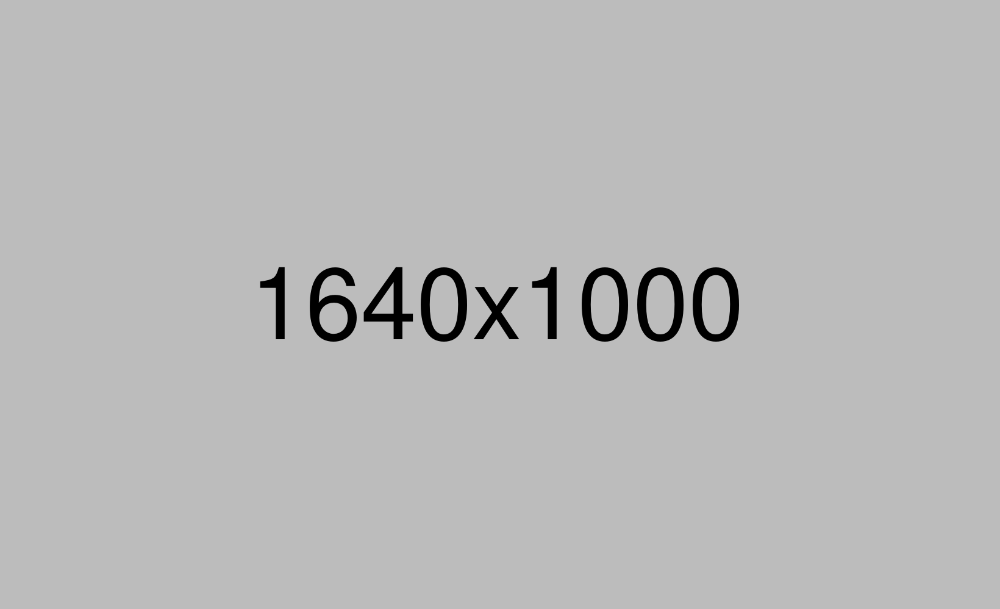

A designer plays a key role in a creative company. Using elements like typography, illustration, photography and layouts, a designer always has an extremely creative mind that can absorb visual trends and deploy them in fresh and exciting ways.
The skills that a product designer must have range from technical to human-centered design. Product designers take part in user research, prototyping, visualization, testing, analyzing, and communicating.
Designers not only create useful products and images, but they also produce. The social context within which they operate circumscribes the choices designers can make in creating and marketing ideas.
A bachelor's degree in Graphic Design, Product Design, HCI, or a related field. A relevant design portfolio demonstrating past work is often required.
Proven experience as a Product Designer, with a track record of successfully launched products.
Proficiency in design tools such as Sketch, Figma, or Adobe Creative Suite.
Strong understanding of user-centered design principles and the ability to translate user needs into intuitive and visually appealing designs.
Ability to collaborate effectively with cross-functional teams, including product managers, engineers, and other stakeholders.
Experience creating interactive prototypes and wireframes to effectively communicate design concepts and interactions.